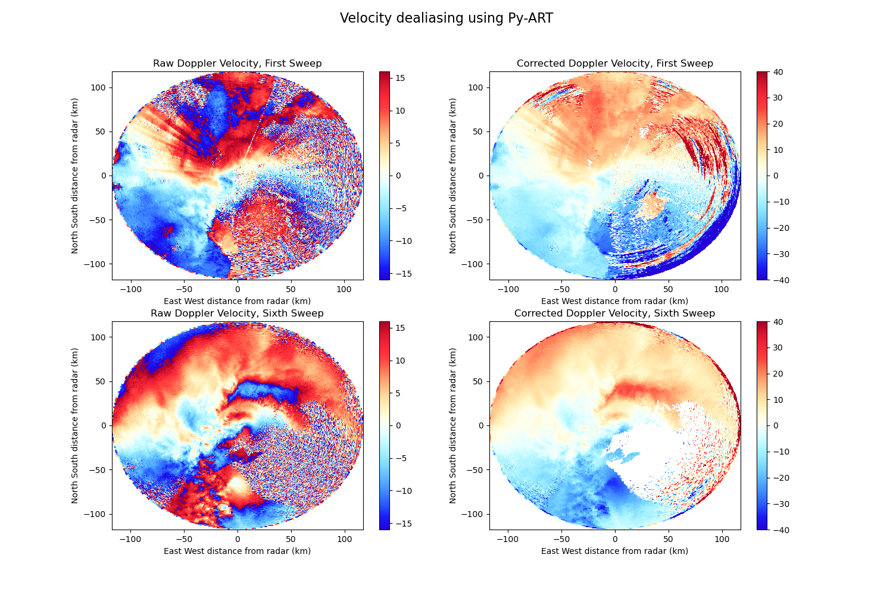

Note
Go to the end to download the full example code.
Dealias doppler velocities using the Region Based Algorithm#
In this example doppler velocities are dealiased using the ial condition of the dealiasing, using the region-based dealiasing algorithm in Py-ART.

print(__doc__)
# Author: Jonathan J. Helmus (jhelmus@anl.gov)
# License: BSD 3 clause
import matplotlib.pyplot as plt
import pyart
from pyart.testing import get_test_data
radar_file = get_test_data("095636.mdv")
sonde_file = get_test_data("sgpinterpolatedsondeC1.c1.20110510.000000.cdf")
# read in the data
radar = pyart.io.read_mdv(radar_file)
# read in sonde data
dt, profile = pyart.io.read_arm_sonde_vap(sonde_file, radar=radar)
# create a gate filter which specifies gates to exclude from dealiasing
gatefilter = pyart.filters.GateFilter(radar)
gatefilter.exclude_transition()
gatefilter.exclude_invalid("velocity")
gatefilter.exclude_invalid("reflectivity")
gatefilter.exclude_outside("reflectivity", 0, 80)
# perform dealiasing
dealias_data = pyart.correct.dealias_region_based(radar, gatefilter=gatefilter)
radar.add_field("corrected_velocity", dealias_data)
# create a plot of the first and sixth sweeps
fig = plt.figure(figsize=(15, 10))
ax1 = fig.add_subplot(221)
display = pyart.graph.RadarDisplay(radar)
display.plot(
"velocity",
0,
vmin=-16,
vmax=16,
ax=ax1,
colorbar_label="",
title="Raw Doppler Velocity, First Sweep",
)
ax2 = fig.add_subplot(222)
display.plot(
"corrected_velocity",
0,
vmin=-40,
vmax=40,
colorbar_label="",
ax=ax2,
title="Corrected Doppler Velocity, First Sweep",
)
ax3 = fig.add_subplot(223)
display = pyart.graph.RadarDisplay(radar)
display.plot(
"velocity",
5,
vmin=-16,
vmax=16,
colorbar_label="",
ax=ax3,
title="Raw Doppler Velocity, Sixth Sweep",
)
ax4 = fig.add_subplot(224)
display.plot_ppi(
"corrected_velocity",
5,
vmin=-40,
vmax=40,
colorbar_label="",
ax=ax4,
title="Corrected Doppler Velocity, Sixth Sweep",
)
plt.suptitle("Velocity dealiasing using Py-ART", fontsize=16)
plt.show()
Total running time of the script: (8 minutes 42.415 seconds)